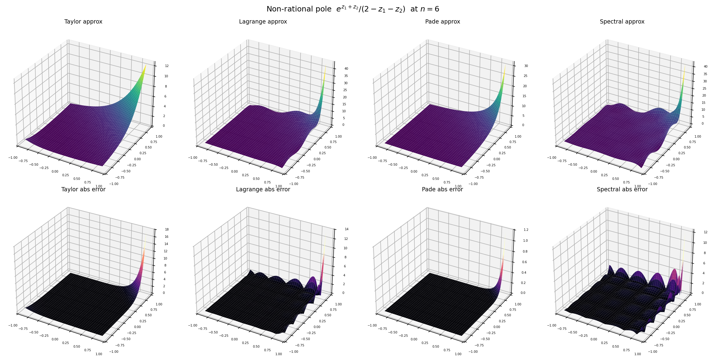

Numerical approximation of holomorphic functions in two complex variables

The problem
There are several classical ways to approximate a holomorphic function: a truncated Taylor series, interpolation, rational (Padé) approximation and spectral projection. In one variable their behaviour is well understood. We asked which one to use for a function of two complex variables, $f(z_1, z_2)$, and what decides the answer.
What makes a fair comparison
A comparison like this is easy to get wrong. If one method runs at a higher degree than another, the "winner" just had more terms. If the error is measured only on real inputs, it says little about a function of complex variables. And if a test function is itself a ratio of polynomials, Padé recovers it exactly, which looks like a great result but says nothing about how well it approximates.
Our approach
- Four methods at matched degree: truncated Taylor series, tensor-product Lagrange interpolation at Chebyshev nodes, Padé rational approximation, and Chebyshev spectral projection. All are controlled by one budget parameter $n$.
- Error on a complex polydisc, not on a real slice.
- Four test functions that differ in one property: where the nearest singularity is and what type it is. One is entire, $e^{z_1+z_2}$. One has a pole just outside the sampling region, $1/(2-z_1-z_2)$. One has the same pole carried by a non-rational factor, $e^{z_1+z_2}/(2-z_1-z_2)$. One has a branch point, $\sqrt{2+z_1+z_2}$.
- A control target. The non-rational pole function is there so that Padé cannot win by recovering the target exactly.
Results
- No method is best everywhere. The best method tracks the analytic structure of the target.
- Chebyshev spectral projection is the most accurate for the entire function and the worst of the four when a pole lies near the domain.
- Padé is best for every target with a nearby singularity. On the non-rational pole target, where exact recovery is impossible, it still beats the next-best method by roughly two orders of magnitude, and it keeps converging as the budget grows while the polynomial methods diverge.
Where it stands
- Under review at SIAM Undergraduate Research Online (SIURO). The project started in my seventh-semester mathematics seminar (Math 451) at Kathmandu University.